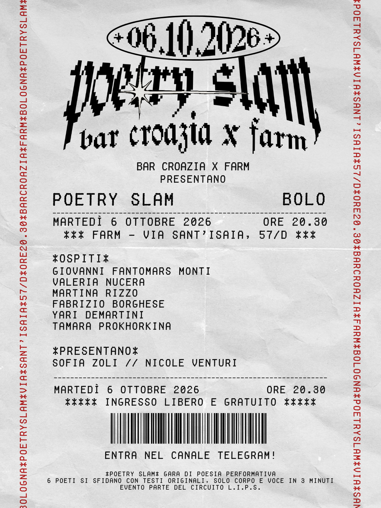

Poetry Slam round I – Bar Croazia x Farm
Farm e Bar Croazia presentano il primo round del torneo di Poetry Slam!
Parteciperanno a questa data:
Giovanni Fantomars MontiValeria Nucera
Martina RizzoFabrizio Borghese
Yari DemartiniTamara
Presentano Sofia Zoli e Nicole Venturi
Poetry Slam valido per il campionato L.I.P.S. e sostenuto da Emilia Romagna Poetry Slam.
Ingresso libero e gratuito.
